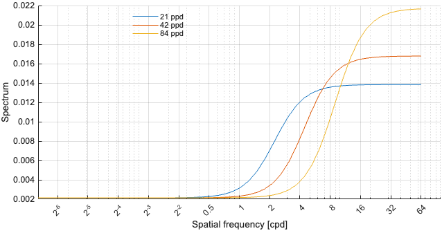
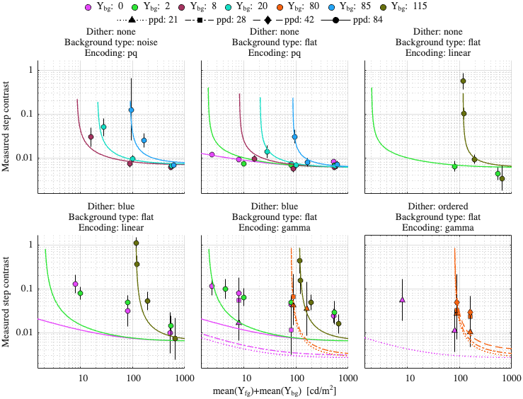
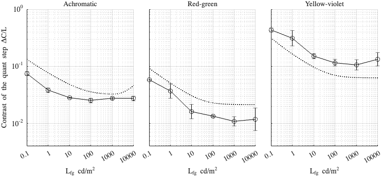

Fitting config: dither_spd, model: daly_masking_inv_f
Fitting error (RMSE): 0.400923
Model parameters
p.beta = 1.21397; p.gs_num = [ 0.630313 0.190665 0.759977 ]; p.noise_params = [ 0.196027 0.551007 0.562885 ]; p.dither_amp_params = [ 0.837661 0.789805 ]; p.blue_dither_params = [ 0.106439 2.94848 0.00213714 0.225334 ];
Model components
Blue noise dither spectrum

Dataset: [ar2025]
Scaling factor: 0.43278

Dataset: [kim2020]
Scaling factor: 1.18673
